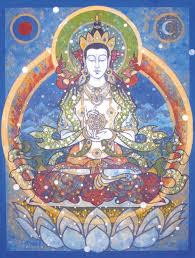

<p>
    <span style="font-size:12px">
        В буддизме Махаяны и Ваджраяны &nbsp;<strong>Вайрочана </strong>считается дхьяни-буддой, одним из пяти Будд мудрости. Дхьяни-будды, в свою очередь, происходят из Ади-будды, Будды дхармокая, из которого происходят все будды плана созерцания - самбхогакая, будды земного плана &ndash; нирманакая и всё мироздание.&nbsp;<br />
        Вайрочана или по-другому Махавайрочана &ndash; это будда самбхогакаи. Его имя переводится с санскрита как &laquo;Солнечный&raquo;, &laquo;Лучезарный&raquo;. Самбхогакая представляет собой &laquo;тело блаженства&raquo; &mdash; это образ Будды, который йог постигает в глубокой медитации. В этой форме Будда проявляет себя, чтобы дать глубокие поучения бодхисатвам и йогинам. Поэтому Вайрочана считается универсальным аспектом исторического Будды Гаутамы.<br />
        Так как всех будд мудрости соотносят по сторонам света, то Вайрочана относится к чистому измерению центра. Но центра не географического, а того центрального измерения, которое проявляется тому практикующему, кто во время смерти достиг просветления. &nbsp;<br />
        Вайрочана предшествует существованию всех существ, поэтому его основной аспект &ndash; пустотность. Культ Махавайрочана очень популярен в Китае и Японии. Он занимает большое место в китайской философской школе Хуаянь. Эта школа подробно разработала концепцию пустоты и взаимозависимого происхождения.<br />
        Если брать пять качеств (скандх), из которых состоит личность &nbsp;в Буддийской мифологии, то Вайрочана соответствует сознанию, различению &ndash; виджняна или, в очищенном сознании, Мудрость Дхармадхату. Остальные сканхи &ndash; форма, ощущения, представление, воля, опыт имеют свои будда-аспекты.<br />
        Изображают Вайрочану с телом белого или светлого цвета, как символ чистоты и пустотной сущности пробужденного ума. В руках Будда Самбхогакайя держит колесо с восемью спицами &ndash; Колесо Закона дхармачакра. Колесо символизирует освобождающее ум от страстей учение Будды. Иногда Вайрочану изображают без Колеса Закона в руках, тогда его руки сложены в дхармачакра-мудре (жесте изложения буддийского закона).<br />
        Иногда его изображают с четырьмя лицами как воплощением аспектов всех дхьяни-будд &ndash; это так называемый Сарвавид-Вайрочана. Лики его смотрят в разные стороны, в восьми руках он держит лук, дхармачакру, ваджру, чётки, стрелу.<br />
        Супруга Вайрочаны &ndash; Белая Тара, царица Небесного Пространства. Она же является женским воплощением (праджней) Вайрочаны
    </span>
</p>
